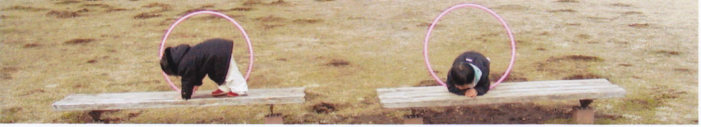

「作文のこころ」−その４
準備中

「作文ワールド」…総合案内（扉）
作文ワールド（Ⅰ原型） 作文ワールドⅡ（個々人の作文）
作文ワールドⅢ（社会科作文） Ⅳ（理科作文） Ⅴ（スポーツ作文）
Ⅵ（七五の四行詩） Ⅶ（図工作文） Ⅷ（エトセトラ） Ⅸ（家庭科作文）
「小学生の作文」（講座案内） トップページ
はじめに
「作文ワールド」Ⅰ～Ⅸのサイトで、いろいろな作文を紹介しているが、
ここでは一度、いわば原点に立ち返って、作文なるものを考えてみたい。
ここに紹介するのは小学校低学年生の作文である。
まず、作文を読んでいただきたい。
ここから、どんな感想なり考えなりが思い浮かぶだろうか。
ひとまず、基本的なことがらをいくつか挙げておこう。
「『作文のこころ』のメモ」へ
もどる
| １．ここちゃん | ２．みかちゃん | ３．まほちゃん |
| ①「まえがみ」 ②「ゆずゆ」 ③「よこはま」 ④「ピアノ」 ⑤「たまどうぶつこうえん」 ⑥「サーカス」 |
①「バーベキュー」 ②「『みかちゃん』から『わたし』へ」 ③「ワールドギフト」 ④「カタバミとヤマトシジミ」 ⑤「集中力」 ⑥「サンタさん」 |
①「ちゅうしゃ」 ②「アイススケート」 ③「大そうじ」 ④「サーカス」 ⑤「魚つり」 ⑥「ハロウィンパーティー」 |
１−１−① 「まえがみ」（小１ 宇山 心美）
「心美」は「ここみ」と読む。ここちゃんは、
入学前の、ひらがなをようやく覚えたころから作文を書いている。
最初はお母さんの助言も必要であったが、
夏休みを過ぎて、秋ごろになると、１人で書くようになった。
そのあたりの作文から紹介しよう。
| 添削例 | |
| 11月21日、金曜日、まえがみをきってもらい ました。 かみのけは、りょうほうにわけたり、あたまの 上でくくったりしてもらいました。リボンをとると、 かみがばさっとおちてきて、目に入ってチクチク していたかったので、おばあちゃんが 「きってあげるよ」 といってくれました。 がっこうからかえって、おばあちゃんのいえに いきました。しんぶんしをひろげました。おばあ ちゃんはわたしのまえがみをつかんで、大きい はさみでチョキンときりました。 「いたい」 と、わたしはいいました。おばあちゃんはやさしく 「だいじょうぶ」 と、いいました。わたしは、 「だいじょうぶ」 と、こたえました。 おわって、みんなに、「とてもかわいい」といわ れました。かがみをみると、わたしもかわいいと おもいました。 |
← ……もらっていました。 ← しんぶんしを、ひざの上にひろげました。 ← ……と、ききました。 |
みかちゃんは３年生になってから作文を始めている。
| 添削例 | |
| ５月４日、わたしの家でバーベキューをしま した。いとこたち、お父さんの会社の人、じい じ、ばあば、ぜんぶで、大人１１人、子ども８人 があつまりました。 その日は、わたしは高尾山から帰ってきて つかれていたけど、いとこたちといっぱいあそ びました。わたしのお兄ちゃん二人と、いとこ のお姉ちゃんのもえちゃん、その弟のまあく ん、もう一人のいとこのあこちゃんと、３がい でウノをしたり、ブロックをしてあそんだりしま した。 にわでは、大人たちがコンロを出して、肉や 野さいをやいていました。「やけたから、下りて いらっしゃい」とお父さんがよんでいましたが、 わたしたちはあそんでいるのがおもしろくて、 「だいじょうぶ」と言って、ずっとあそんでいま した。いったんにわに下りたけど、ごはんはあ まり食べませんでした。 バーベキューのためにあつまったのに、子ど もたちはあそびにむ中になって、ほとんど食べ なかったので、バーベキューはキューケイでし た。 |
← ……ウノをしたり、ブロックをしたりしてあそびました。 |
落ちがついているが、大人たちへの思いやりもある。
もどる
| 添削例 | |
| １１月２０日、金曜日、わたしは友だちといっ しょに、ちゅうしゃに行きました。お母さんの車 ２台で行きました。 さいしょに友だちがうちました。つぎにその友 だちの妹がうちました。うちおわったら、その子 はなきだしました。そのつぎに、その子のお母 さんがうちました。 「いたい！」 と言いました。 わたしの番がきました。ちくっとしたけど、わ たしはなにも言いませんでした。そのあと、妹 がうちました。妹は、けろっとしていました。 わたしたちのほうが先に帰りました。友だち のほうは、その後ちょっとおくれて帰りました。 ちゅうしゃはちょっといたかったけど、たのし かったです。 |
◎ みんながはらはら、どきどきしている中で、「けろっとしていた」というのが、おもしろいね。 |
スリルがあって、「たのしかった」のだろうな。
もどる
| 添削例 | |
| １２月２２日、よる、おばあちゃんとおふろに 入りました。ふたをあけると、大きなゆずが１ こ入っていました。わたしは、おばあちゃんに 「なんで、ゆずが入っているの」 とききました。おばあちゃんは 「からだがよくあたたまるからよ」 とおしえてくれました。 おふろに入って、手のひらにのせました。か わはぷつぷつで、手でひっかくと、あまいにお いがして、わたしとおばあちゃんは 「リラックスするね」 とわらいました。 おばあちゃんがゆずをしずめようとしたら、 ぷくっとういてきました。ふしぎだな、とおもい ました。同じくだものや、やさいでも、水にうく ものとしずむものがあると、おしえてもらった ので、じっけんしてみたいなとおもいました。 おふろからでると、からだがぽかぽかでし た。 |
← ゆずを手のひらに…… ← おばあちゃんに、同じくだものや、…… |
おばあちゃんと入ると、いいことがいっぱいあるね。
もどる
１−２−②「『みかちゃん』から『わたし』へ」（小３ 西田 美花）
| 添削例 | |
| わたしは自分のことを「みかちゃん」と言ってい たので、お父さんやお母さん、先生に「わたしと 言いなさい」と言われていました。そこで、７月 １０日から「わたし」と言うことにしました。 学校に行くと、「みかちゃんね」となります。み んながいる前で「わたし」と言うのは、はずかし かったけれど、早く「わたし」と言おうと思うと、ド キドキして、（なんか言われるかな）と思ったけ ど、なんにも言われなくて、びっくりしました。でも 、一人だけ「変だ」と言う子がいました。その子は いじわるな子で、「みかちゃんは『あたい』や『あ たし』のほうがにあってる」と言いました。「ほか にも、『あたくし』というのがあるよ」と言って、「う ふふ」とわらいました。そう言われると、いやだっ たけど、わたしには「わたし」が一番にあってい ると思います。 家では、たまに「みかちゃん」と言ってしまいま すが、すぐに「わたし」と言い直しています。 |
微妙な心理が、とてもよく書けている。
もどる
| 添削例 | |
| １２月２８日、月よう日、かぞくとおじいちゃん、 おばあちゃんといっしょに江戸川区へアイスス ケートに行きました。スケートをするところがへ っているということを、おばあちゃんにおしえて もらいました。 スケートぐつにはきかえました。ろうかをあるく ときに、ちょっとこわかったです。こおりのところ について、すべっているときに、よろよろしたの で、「生まれたての子じかみたいだ」と、お父さ んに言われました。はじめてすべったので、す ってんころりんところびました。２０回もころびま した。手や足をひねりました。すごくいたかった です。妹のみくもころんでいましたが、わたしよ り早くすべれるようになっていました。 リンクのせいそうをしている間、休けいして、 それからちょっとなれて、すべれるようになり ました。１回もころばずに１周できました。 ころんだところは、すごくいたかったので、ひ ざを見たら、新しいきずができていました。で も、すべれるようになったので、うれしかった です。 |
〇 真帆ちゃんちは東京都の真ん中あたりにあって、江戸川区は東京の東のはじっこにあるんだね。 ← ……すべれるようになったので、いたいのをわすれてしまいました。 |
| 添削例 | |
| ５月１８日、日ようび、よこはまへいきました。 おかあさん、おとうさん、おばあちゃん、おじい ちゃんといっしょにいきました。おとうさんのうん てんでいきました。おてんきがよく、お日さまが にこにこでした。 さいしょにバラえんにいきました。あか、みず いろ、ももいろ、しろ、きみどり、きいろ、むらさ きと、いろいろないろのバラが、たくさんさいて いました。わたしはバラにちかづいて、においを かぎました。とてもいいにおいで、あまくて、よだ れがでそうでした。 おひるにチャーハンとヤキソバをたべました。 おいしかったです。 それから、大さんばしでふねをみました。大き なふねで、ながさが３００メートルあり、たかさが ベイブリッジにあたりそうなぐらいだそうです。大 きくて、びっくりしました。ふねがでるとき、たいこ がドンドンなって、どきどきしました。わたしは、 ふねにのっているひとたちに、てをふりました。 ふねにのっているひとたちも、てをふってくれま した。 バラがきれいで、ごはんがおいしくて、ふねが 大きくて、すてきな１日でした。 |
← ……おじいちゃんといっしょに、おとうさんのうんてんでいきました。 ※ 中華街へ行ったんだね。 ※ １０階建てのビルぐらいの高さなのだろうな。高いね。 |
大きな船は「コスタビクトリア」号といって、７万５０００トンあり、
干潮を待ってベイブリッジをくぐったということだ。
その日は、おじいちゃんがあらかじめ
出航の時間を調べておいてくれたのだそうだ。
………………………………………………………………
ここちゃんには道場の中の出来事を書いた作文もある。
「道場日記抄」の「道場のお兄ちゃんたち」を、どうぞ。
もどる
| 添削例 | |
| わたしは先週、お部屋のおかたづけをしました。 大切にしていたお人形がいっぱいふえて、おくとこ ろがなくなっていました。プリキュアのお人形は、よ うちえんぐらいの子がもつものなので、はずかしい から、どうしようかなと思いました。 すてちゃうと、メリーさんが来ちゃうから、すてるの はいやだなと思いました。メリーさんはもったいない おばけで、お人形がすてられるとかなしくて、おば けになって、すてたお友だちのところにやってきま す。それがこわいので、わたしはお母さんにそうだ んしました。そしたら、人形くようか、ワールドギフト があるよと教えてくれました。 ワールドギフトは、世界中の困っている子どもた ちに人形やおもちゃやようふくをあげます。それだ ったらメリーさんも来ないし、お人形もよろこんでく れるかなと思い、ワールドギフトにすることにしまし た。世界中のみんながよろこんでくれたらいいなと 思います。 |
← わたしは９月の中ごろ、 ← メリーさんは「もったいないおばけ」で、…… ※ 人形供養 |
美花ちゃんは実に素直に自分の気持ちを書く。
好きな人のことを書いた作文もある。
「道場日記抄」の「道場のお兄ちゃんたち」へ、どうぞ。
もどる
| 添削例 | |
| ３月２６日土曜日、今日から春休みです。わたし は妹のみくとお母さんといっしょに大そうじをしまし た。 はじめに、ランドセルの中にあったものを全部出し て、３年生のものが入るように、中をきれいにしまし た。 つぎに、たなの中がきたなかったので、全部出し て、きれいにしました。それから、つくえの中もきた なかったので、いるものといらないものを分けて、き れいにしました。 さいごに、ゆかをみがきました。でも、水でいっぱ いぬらしちゃったので、わたしも妹もすってんころり んしてしまいました。 何時間かかったか、お母さんに聞いたら、３時間 半だったそうです。おそうじは大きらいですが、へ やの中もつくえもきれいになったので、とてもいい 気持ちになりました。 |
気持ちよく新学期を迎えられたことだろう。
妹のみくちゃんも１年生になった。
もどる
| 添削例 | |
| わたしはピアノをならっています。今ならっている きょくは、「大きなボール、小さなボール」です。大き なボールのところはつよくひき、小さなボールのとこ ろはよわくひきます。 はっぴょう会のきょくは、「バウムクーヘン」です。 このきょくではペダルをふみます。そして、あまいか んじでひきます。でも、わたしがひくと、お母さんに 「せんべいみたい」 と言われました。 はっぴょう会は来年の４月なので、それまでに、 せんべいからバウムクーヘンのようにやわらかくな るように、たくさんたくさんれんしゅうしようと思いま す。 |
これを書いたのが１０月で、それから半年がたっている。
発表会では、やわらかくひけたようだ。
もどる
| 添削例 | |
| ６月２日金曜日、校外学習で大和南公園へ行きました。カタバミとヤマトシジミを見つけるためにです。 カタバミはクローバーぐらいの大きさで、３つのハートの葉がついています。公園に着いてすぐ、わたしたちのはんはカタバミを見つけました。食べられるということなので、食べてみました。トマトの味がして、ちょっとすっぱかったけど、すごくおいしかったです。 十円玉をみがけるということなので、みがきました。そのために、カタバミをいっぱいあつめました。カタバミを手のひらにのせて、十円玉をサンドイッチのようにしてみがくと、茶色がだんだんピンク色になって、きたなかった十円玉が、新品と同じくらいきれいになりました。手がきたなくなったけど、あらうと、とてもきれいになりました。 ヤマトシジミはちょうちょです。はい色の羽に黒い点がついています。カタバミに泊まって、葉っぱを食べていました。つかまえたかったけど、おいしそうに食事をしていたので、そっとしておきました。 カタバミもヤマトシジミも本物が見られたので、とても楽しかったです。 |
○ この公園は、歩いていける所にあるんだね。 ◎ 説明がとても分かりやすい。 食べてみたというのもいいね。味もよく伝わってくる。 ◎ いい実験をしたね。 ◎ 思いやりもあっていいね。それも勉強の一つだ。 |
内容がおもしろく、説明が分かりやすく、
思いやりもあって、最上等の作文だ。
もどる
１−１−⑤「たまどうぶつこうえん」（小２ 宇山 心美）
「多摩動物公園」は東京・日野市にある。
| 添削例 | |
| 10月12日、わたしはお母さんと２人で、モノレール にのって、たまどうぶつこうえんに行きました。 どうぶつえんでは、ライオン、キリン、フラミンゴ、 アフリカゾウ、グレビーシマウマ、チンパンジー、カ ンガルー、コアラ、アジアゾウ、トラ、こん虫を見まし た。一ばんおもしろかったのはチンパンジーです。 チンパンジーはコインをもって、じどうはんばいき に行って、ジュースをかっていました。ボスのけんた がよこどりしてしまうので、けんたがそばにいなくな ったら、みんないそいでジュースをかいに行ってい ました。おもしろかったし、チンパンジーは頭がよい と思いました。 どうぶつえんで１日中あるいてつかれました。でも 、かわいいどうぶつたちに会って、たのしかったで す。 |
話の構成がよい。
見た動物を列挙したうえで、１つに焦点を合わせている。
これは一種の「鳥観図法」である。
この方法については、こちらの「修学旅行三部作」へ。
もどる
| 添削例 | |
| １１月１８日、学校をお休みしました。ちくのうしょ うになりかけて、前の日の夜、はいちゃったからで す。朝にはなおったけど、学げい会が近いからって お母さんが「休みなさい！」と言いました。 お家でまったりしていました。でも、お母さんが会 社に行ってから、勉強はちゃんとしました。お母さん が、勉強する内容を紙に書いていてくれたので、そ のとおりにしました。終わって、会社に電話をしまし た。そしたら、早く終わったので、お母さんがびっく りしていました。それから、自分の部屋でパットをし たり、たから箱のたからをいじったり、福岡の友だ ちに手紙を書いたりしました。 いつもは、お母さんがお家にいるとき、「だらだら しちゃダメ」言われると集中しているけど、だれもい ない時って、すごく集中できるんだなと思いました。 お父さんが帰ってきて、「よくがんばったね。でも、 お母さんやみんながいる時も、そうしなさい」と言わ れました。 ふだんもそうしようと思いました。集中して勉強す ると、時間があまって、いっぱいあそべるんだなと 思いました。 |
○ 「まったり」とは、おもしろい言葉だね。「手持ちぶさた」の様子かな。 ○ そう、道場でも美花ちゃんはいつも作文を書いてくるから、直しも早く終わって、トランポリンをしたり、ピタゴラスイッチをしたりして、遊べるんだよね。 |
| 添削例 | |
| ７月２５日、月曜日、わたしは家ぞくと、お友だちの家ぞくといっしょに、あらかわへ魚つりに行きました。 魚をつる所は遊園地の中にあります。魚つりでは、魚は持って帰れませんが、魚をつって楽しむことができます。でも、とてもむずかしいところがあります。うきがしずんだら、今がチャンスだよというあいずで、そのまましずまなかったら、魚はいないということです。うきが下がっていても、魚にえさを食べられるときがあったので、そのときはとてもくやしかったです。 わたしははじめて７ひきもつって、とてもテンションが上がりました。お友だちも７ひきつりました。お母さんたちは６匹ぐらいずつでした。 次も、いっぱいつりたいです。 |
※ 「あらかわ」は、東京湾に注いでいる「荒川」のことなのだね。 |
短い中に、釣りの妙味がよく描かれているね。
もどる
同じサーカスを別々の日に見た、２人の作文を紹介しよう。
１−１−⑥「サーカス」（小２ 宇山 心美）
| 添削例 | |
| １月１１日、イオンモールむさし村山のとなりに大きなテントがありました。木下サーカスが来たので、おじいちゃん、おばあちゃん、お母さん、わたしの４人で行きました。 ピエロ、マジック、オートバイク、空中ブランコなどがありました。一ばんかわいいのがキリンでした。おきゃくさんが手にえさをのせると、キリンが食べました。 ２ばん目におもしろかったのは、ホワイトライオンです。６頭のうち３頭が白い色で、３頭がちゃ色でした。５頭がハードルをとびこえましたが、１頭はいやな顔をしていて、ちょう教しが 「おねがい」 とアクションすると、そのライオンはしぶひぶハードルの下をくぐっていきました。みんな大わらいしました。 どうぶつたちが、いっしょうけんめい芸をしていたので、わたしもどうぶつにまけないように、がんばろうと思いました。 |
その３週間後に真帆ちゃんたちが同じサーカスを見に行った。
動物たちの様子を読み比べてみよう。
１−３−④「サーカス」（小２ 宮田 真帆）
| 添削例 | |
| １月３０日、土曜日、家ぞくでサーカスを見に行きました。ドームの中に入ると、くらくなってサーカスがはじまりました。 さいしょはピエロで、バケツをかぶったら、頭がバケツの顔になりました。びっくりして妹のほうを見たら、目が丸くなっていました。わたしの目も丸くなっていたと思います。 くうちゅうブランコで、つかまるほうの人がうける人のズボンにつかまったので、ズボンがぬげてしまいました。とられた人ははずかしそうにしていました。とてもおもしろかったです。 どうぶつのキリン、ゾウ、ライオン、シマウマが出てきました。キリンはとちゅうからくさくなってきました。きっとおならをしたのでしょう。ゾウはとちゅうでおもらしをしました。じゃあじゃあ出ていました。 ライオンは６頭いて、ハードルとびこえていましたが、１頭がうごかなくなってしまいました。そこで、ライオンのそばにいる人が 「お願いします」 と言ったら、そのライオンはしぶしぶハードルの下をくぐっていきました。みんな大わらいしました。 バイクが玉の中を走ったり、フラフープを手足で回したりして、おしまいまでおもしろくて、たのしかったです。 |
※ バケツの底に顔が描いてあったのかな。 |
動物たちはよく言うことを聞くけれど、
生理現象だけはどうにもならないのだね。
もどる
| 添削例 | |
| 10月31日、土曜日、ハロウィンパーティーをしました。 ばんごはんを食べてから、わたしはミニーちゃんのカチューシャとねこのしっぽをつけました。妹のミクはしらゆきひめのドレスをきました。ママといっしょに友だちののどかちゃんの家へ行きました。 のどかちゃんと妹のはるかちゃんは、二人ともまじょのかっこうをしていました。4人できんじょの家をまわりました。 「おかしをくれないと、いたずらするぞ～」というと、おかしをくれました。２けんめの家では、 「おかしをあげるから、いたずらしないでちょうだい」といって、おかしをくれました。３げんめでもおかしをもらって、のどかちゃんの家に帰りました。 のどかちゃんの家では、かぼちゃのランタンがかざってありました。中にろうそくが入っていて、かわいいかおをしていました。 もらったおかしをもって、家に帰りました。 |
← ……入っていて、かぼちゃはかわいいかおを…… |
楽しかっただろうなあ。
背後にお母さん方の見事な連携が感じられる。
もどる
| 添削例 | |
| わたしは今年、サンタさんに手紙を書きました。私は、くつがほしいです。でも、大事なことを書きわすれました。それはサイズです。サイズがわからないと、サンタさんはこまるでしょう。送って２日目ぐらいに思い出して、「あっ」と思いました。 でも、安心です。友だちの話では、マラソン大会に出場したとき、それをサンタさんが見ていたそうです。サンタさんの住んでいる所はフィンランドという外国で、日本から遠いのに、友だちが出場しているのを知っていて、サンタさんが「がんばったね」と言ってくれたそうです。だから、くつのサイズが書いてなくても、２１．５センチだとわかると思います。 わからなかったら、しようがないなと思います。次からは気をつけようと思うし、おちこまないようにしたいです。 |
結果はどうだったのだろうか。
サンタさんは、２１．５センチのくつを届けてくれたそうだ。
心が温まるなあ。
もどる
| １．まほちゃん | ２．みくちゃん | ３．まりちゃん |
| ①「冬休みランキング５」 ②「ハウステンボス」 ③「はいしゃさん」 ④「おこのみやき」 ⑤「カラオケ」 |
①「アンデルセン公園」 ②「千仏しょうにゅうどう」 ③「はいしゃさん」 ④「おこのみやき」 ⑤「カラオケ」 |
①「小指のけが」 ②「タイム」 （みくちゃん） ⑥「だんご虫」 |
まほちゃんと、みくちゃんは姉妹である。
それでいて、
同じ所へ行っても、同じ物をみても、
見方や印象が違う。
そんなところも紹介しよう。
なお、まほちゃんとまりちゃんは４年生になったので、
このページを卒業して、
ほかの、いろいろなページで活躍している。
もどる
２ー１−①「冬休みランキング５」（小３ 宮田 真帆）
おもしろいことを思いつくものだ。
| 添削例・諸注意 | |
| 1月22日、日曜日、私は冬休みをふりかえって、ランキングをつけました。ランキングはベスト５まであります。 第5位は、紅白歌合戦を全部見られたことです。私は生まれてはじめて起きていられて楽しかったです。 第4位は、千葉のおじいちゃんにDSのカセットを買ってもらったことです。とてもうれしかったので、おじいちゃんといっしょにそのカセットであそびました。 第3位は、おじいちゃんと夜ふかしをしたことです。おじいちゃんはジュースをのませてくれたり、おもしろい話をしてくれたりしました。私はその時、おじいちゃんはやさしいなと思いました。だから、今度も夜ふかしをしたいです。 第2位は、アンデルセン公園へ行ったことです。公園にはアスレチックがいっぱいありました。とてもスリルがあって、わくわくドキドキしながらあそびました。 第1位は、浦安公園に言ったことです。家族でたこあげをしました。たこは空高く上がりました。こんなに高く上がったのははじめてでした。 今年の冬休みには楽しい思い出がいっぱいできました。 |
◯ この公園は千葉県の船橋市にあるんだね。 次の浦安公園も千葉県だね。 |
「夜ふかし」がいいねえ。おうちの温かさも感じられる。
もどる
| 添削例 | |
| １月３日、かぞくと、いとこのかぞくと、おばあちゃんとアンデルセンこうえんに行きました。 さいしょに、けん玉チャンピオンを見ました。ステージでむずかしいわざを見せてくれました。けん玉で、もしかめ、やきゅう、サッカーなどを見ました。サッカーでは、玉を足でポンとけって、さらにのせます。そして、玉をうしろになげたり、足のももの下をくぐらせたりしていました。大はくしゅでした。 おわったあと、わたしのけん玉にサインしてくれました。いっしょにしゃしんもとってくれました。 わたしはアンデルセン公園に来てよかったなと思いました。これからけん玉をいっぱいれんしゅうして、日本一のけん玉せんしゅをめざしたいです。 |
※ 「もしかめ」は、「もしもしかめよ、かめさんよ……」という歌を歌いながら、けん玉をするんだね。 |
| 添削例 | |
| 11月17日、わたしは小指をけがしてしまいました。ドロケイで、友だちのかかとにあたって、つき指をしてしまいました。 「どうして、わたしはこんなにどじなんだろう」と思いました。 そのあと、小指のまん中へんがはれて、おまけに、小指だけ手をにぎれなくなってしまいました。 すっごくいたかったので、ほ健室の先生に見てもらったら、 「ちょっと、つき指っぽいので、そうたいしましょう」 と言われました。わたしは、 「えっ、ちょっと友だちのかかとに小指があたっただけなのに、そうたいするもんなの」 と思いました。 そうたいして、お母さんと病院へ行って、レントゲンで写真をとってもらって見てみたら、先生が 「まん中のほねにひびが入っていますね。けっこうひびが入っているので、4週間くらいはほうたいをまいといたほうがいいですよ」 と言いました。わたしはびっくりして、思わず、 「ほねって、そんなにひびがはいるもんなんだ」 と言ってしまいました。 早くなおるといいな、と思いました。 |
※ ドロケイは、「どろぼうとけいかん」という遊びなのだね。 ← おまけに、手をにぎっても小指だけまがらなくなってしまいました。 |
「わたしは、……どじなんだろう」というところが
正直でいいね。
もどる
２−１−② 「ハウステンボス」（小３ 宮田 真帆）
真帆ちゃん、美空ちゃんのお母さんのふるさとは福岡県である。
夏休みにはそのふるさとに行く。
せっかく九州まで行ったのだから、長崎にも足を延ばす。
| 添削例 | |
| 8月19日金曜日、私は家族と長崎のハウステンボスへ行きました。 ハウステンボスは、きれいなたてものがいっぱいある所です。オランダの風景でした。その中に、たいこのたつ人とハウスかげきだん、ハッピーレイン、光のカフェ＆バーがあります。いろいろなショーの中で、いちばん楽しかったのは、たいこのたつ人です。私がたいこをたたくと、３Dの大きな画面にうつります。画めんがとても大きいので、びっくりしました。ふつうのゲーム機の583倍もあるということです。ほかのお客さんといっしょに楽しみました。とても楽しかったので、もっと見たいと思いましたが、またぎょうれつにならぶことになるので、あきらめました。 ホテルの中へ入ると、そこもオランダみたいでした。シャンデリアの下にベッドとソファが２つずつあり、テレビもありました。まどからそとをみると、うんがにたてものや風車がうつっていて、まるでオランダに行ったみたいでした。 |
← 風車がまわっていて、オランダの…… |
昼間の景色もいいけど、夜は明かりがついていて、
もっときれいなのだろうな。
もどる
２−２−②「千仏しょうにゅうどう」（小１ 宮田美空）
千仏鍾乳洞は福岡県にあって、国の天然記念物に指定されている。
入り口から９００メートルの所まで、大人も子供も歩いて行ける。
| 添削例 | |
| ８月４日、木よう日、はとこのあらたくんと、がくくん、お母さんとおねえちゃん、おばあちゃんたちといっしょに北九州の千仏しょうにゅうどうに行きました。 しょうにゅうどうに入ったら、ちょっとすずしかったです。上にはでんきがついていました。右と左と下は、いわだらけでした。とちゅうから、つめたい水の中をあるきました。出たいぐらいつめたかったです。 どんどんすすんで、すべったり、ころんだりしました。パンツまでぬれてしまいました。せまいところを行くので、お母さんたちはたいへんそうでした。 さいごまで行って、きたみちをもどりました。そとにでると、もあっとあつかったです。こんどはお父さんもつれていきたいです。 |
まるでパンフレットの地図を見るように
順序よく書かれている。
もどる
| 添削例 | |
| わたしは毎週金曜日に、小金井公園にある体育館で、友だちのこころちゃんといっしょに、早く泳ぐためのコースにかよっています。 １月２０日金曜日は、タイムをはかる日だったので、すっごく楽しみにしていました。わたしは「いつもはどれぐらいの早さで泳いでいるのだろう」。早くしりたいな」と思っていました。 車で２０分くらいで体育館につき、わたしはルンルンしていました。こころちゃんといっしょに２階できがえて、体そうをしてプールに入りました。バタフライを５０メートル、せ泳ぎ５０メートル、ひら泳ぎ５０メートルをして、クロールで５０メートル泳ぎました。その次に、フィンをつけ、ビートばんにつかまって、バタフライの足の練習を５０メートルしました。 「あ、いよいよタイムをはかる時だ」と思っていたら、「今日はタイムをはかりません」と言われました。 タイムをはかってもらえなかったのは、くやしかったですが、たくさん泳いで楽しかったです。 |
肩すかしをくらったようなものだけど、ドラマチックでもある。
もどる
同じ出来事でも、立場が違えばどういう話になるか。
そんな二例を続けて紹介しよう。
２−１−③ 「はいしゃさん」（小３ 宮田 真帆）
はじめの題は「はいしゃのペンチ」だった。
| 添削例 | |
| 学校のしかけんしんで、「はいしゃに行ったほうがよい」と書いてありました。５月くらいに、下の大人のはが生えてきて、子どものはがわれていました。 １０月８日、土曜日、はいしゃさんへ行くと、そののこっていたはをぬくことになりました。私は、ぬくと思わなかったので、不安になりました。 さいしょにくすりをぬり、次にますいをぬり、その次にしびれるくすりをぬり、その次にちゅうしゃをしました。その時、はぐきにちゅうしゃをすると聞いたので、とてもびっくりしました。そして、ペンチではをぬきました。その時、私はとてもこわかったですが、あっというまにぬけていました。 もうそのはいしゃさんには行きたくなくなりました。お母さんにまたつれていかされそうになると、家のすみにかくれたいと思いました。 |
※ 歯科検診 |
淡々と書かれているが、よほどこたえたのだろう。
いっしょについていった妹のみくちゃんによると、
次のようであった。
２−２−③「はいしゃさん」（小１ 宮田 美空）
はじめの題は「おねえちゃん、がんばれ！」だった。
| 添削例 | |
| １０月８日、土よう日、おねえちゃんとお母さんと、３人ではいしゃさんに行きました。 おねえちゃんがイスにすわって、大きく口をあけていました。むしばはありませんでした。みぎの下のはをぬくことになりました。 おねえちゃんは、はをぬくからどきどきして、ないていました。わたしはこわくなって、おへやから出ていきました。となりのへやに行くと、おねえちゃんの「ぬかないで」とさけぶこえがきこえてきました。わたしは耳をふさぎました。１ぷんぐらいして、しずかになったから、おねえちゃんのへやへ行ってみました。おねえちゃんはいたそうなかおをして、イスにすわっていました。 おねえちゃんは、はをぬいて、１こおねえさんになったとおもいました。 |
スリラー小説を読むようなスリルがある。
おしまいの感想がいいねえ。
もどる
真帆ちゃん・美空ちゃん姉妹はお母さんといっしょに
おこのみやきを作った。
同じことでも姉妹によって、とらえ方が異なる。
そんな作文を２つ続けて紹介しよう。
２−１−④「おこのみやき」（小３ 宮田 真帆）
| 添削例 | |
| ９月１９日、月曜日、わたしはお母さんと妹のみくといっしょに、昼ごはんにおこのみやきを作りました。 ざいりょうは玉子、小麦粉、いか、えび、キャベツ、おもち、チーズ、だしです。 玉子は妹のみくがわりました。でも、からが入ってしまい、とり出すのがとてもたいへんでした。ざいりょうをボウルに入れて、まぜるのも妹のみくでした。とちゅうで、わたしとこうたいしましたが、まぜるのがだんだん重くなっていくので、思っていたいじょうにむずかしかったです。 フライパンに流しこむ時にとてもしんちょうに入れました。こぼしたらたいへんだからです。ひっくりかえすのが、とてもこわかったです。 作るのに、とても時間がかかりましたが、とてもおいしくって、３人ともおかわりをしました。とてもおいしかったので、また３人で作りたいです。 |
←◯ よくあることだ、はじめのうちはね。 |
続いて、同じ時の美空ちゃんの作文を紹介しよう。
| 添削例 | |
| ９月１９日、月よう日、おねえちゃんとお母さんと３人で、おこのみやきを作りました。 さいしょに、たまごをいれて、だしと、こむぎことお水をいれました。つぎに、ぶつぶつがないように、ようくかきまぜて、いかとえびをいれて、またようくかきまぜて、キャベツをいれて、またかきまぜました。そして、チーズとおもちをいれて、フライパンにながしこみました。そして、ひっくりかえして、できあがりました。 わたしは、おさらをだしてまっていました。マヨネーズとケチャップをかけてたべました。わたしはおなかがすいていたので、すぐにたべちゃいました。ほっかほっかで、おいしかったです。 |
← ……ながしこみました。いいにおいがしてきたので、ひっくりかえして…… |
お姉ちゃんの目は周りにも向いているのに対し、
妹の目はもっぱらの関心事に向けられている、
と言えようか。
もどる
今回も姉妹の作文を連続で紹介しよう。
２−１−⑤ 「カラオケ」（小３ 宮田真帆）
| 添削例 | |
| １２月１７日土曜日、妹の美空のたん生日のおいわいに、カラオケに行きました。私はお母さんと歌ったり、美空と歌ったり、一人で歌ったりしました。 私が一人で歌ったのは「ざんこくな天使」と、生きものがかりの「風がふいている」という歌です。とちゅうでケーキが来て、「ハッピバースデイ」を歌って、ケーキを食べたり、ジュースを飲んだりして歌いました。妹は「ドラえもん」など、いっぱい歌って、大はしゃぎでした。あせをいっぱいかいていました。 その中で楽しかったことが２つあります。それは、お父さん、お母さん、妹と、みんなでカラオケに行ったことです。もう一つは、お母さんと松田せい子の歌をいっしょに歌ったことです。曲は「青いさんごしょう」です。お母さんといっしょに歌ったので、一番じょうずに歌えました。 今度はお父さんといっしょに歌いたいです。 |
美空ちゃんは、どう感じたのだろう。
２−２−⑤ 「カラオケ」（小１ 宮田 美空）
| 添削例 | |
| １２月１７日土よう日、かぞくでカラオケにいきました。わたしのたんじょう日のため、つれていってくれました。 わたしは「海の声」と「ドラえもん」、「にんじゃりばんばん」、「ファッションモンスター」、「あいたかった」など、いっぱいうたいました。その中で、いちばんいんしょうにのこったのは、「ドラえもん」です。いちばんうたの声がにていたからです。とってもとってもうまくうたえました。 うたいながら、おたんじょうびのケーキをたべました。わたしはチョコレートをたべました。おねえちゃんはチョコがだいこうぶつです。みんなおかわりしました。のみものは、カフェオレみたいなのにしました。わたしはもう大はしゃぎしました。しかも、いっしょうけんめいうたったから、あせびっしょりになりました。のどがからからになって、カフェオレをのんだら、うすいのみものになっていました。 おとうさんと、おかあさんはうたがとてもじょうずです。とってもとってもたのしい一日でした。 |
← ドラえもんの声がわたしの声ににていたからです。 |
こんなに楽しいことってないくらいに、
楽しい楽しい誕生日パーティーだったね。
もどる
２−２−⑥「だんご虫」（小２ 宮田美空）
みくちゃんは虫をこわがらない。
| 添削例 | |
| ６月１５日、木曜日、学校からの帰り道で、だんご虫を見つけました。かわいかったので、それをひろって、家に帰って虫かごの中に入れました。さいしょは、きもちわるかったけど、虫かごの中に入れたら、だんだんかわいく見えてきました。 わたしがおふろに入っているときに、虫かごからにげちゃうかもしれないと思いました。でも、にげなくて、げんきにうごいていました。 あさになって、だんご虫を見たら、うごかなくなっていました。「なぜ、うごかないのだろう。そうだ、土がないからだ」と、わたしは思いました。これから、だんご虫を見つけたら、土を入れるようにしようと思いました。 ６月２３日、金曜日、友だちのさゆきちゃんにだんご虫を１ぴきもらいました。土を入れてかっていると、よくうごいていました。そのだんご虫はメスでした。おなかがきいろいからです。そのだんご虫を手の上にのっけたら、赤ちゃんが２ひき生まれてきました。１ぴきはおっこちましたが、うごいていました。もう１ぴきといっしょに虫かごの中に入れてやりました。 その生まれた２ひきは、かっこいい、かわいいおとなになってほしいと思いました。 （つづく） |
| １．しのちゃん | ２．みくちゃん | ３．レオくん |
| ①「サンタさん」 ②「ハワイ」 ③「竹の子ほり」 ④「イルカショー」 |
①「ダイエット」 ②「じびか」 ③「わんこカフェ」 ④「上ばき」 |
①「クリスマス」 ②「十五夜の月」 ③「電車でお見まい」 ④「ばあばの引っこし」 |
みくちゃんは「その２」に続いての登場で、
しのちゃんは、ここが終わったら、こちらの２に移る。
レオくんも初登場である。
３−１−① 「サンタさん」（小３ 渡部 詩乃）
ほんとうにサンタさんに会った話から紹介しよう。
| 添削例 | |
| きょ年のクリスマスイブにサンタさんにプレゼントをもらいました。 クリスマスイブの午前に「本当にサンタさん来るかな。来なかったらどうしよう」と思いました。お昼の時に、「お母さん、お父さん、サンタさん来るかな」と言ったら、「いい子にしていたら、来るよ」言いました。 その日の夜、わたしはずっとおきているつもりでしたが、ねむってしまいました。わたしはコツコツという音で目がさめました。そしたら、目の前にサンタさんがいたので、びっくりしました。まばたきを何回もしてみたけど、赤いふくを着て、白い玉のついた赤いぼうしをかぶったおじいさんが立っていました。わたしはねむったふりをしましたが、行ってしまう前に一どでも声を聞きたかったので、サンタさんに「もう行っちゃうの？」と聞いたら、「もう行かなきゃならないんだ」と言って、プレゼントをおいて、まどから出て行ってしまいました。 朝おきて、プレゼントを空けると、リトルライブペットという犬のお人形が入っていました。わたしがおねがいしたペットです。サンタさんはわたしのねがいを聞いて、とどけに来てくれたんだと思いました。 |
← ……来るよ」とお父さんが言いました。 |
これは夢の中の話ではなく、ほんとうにあった話のようだ。
なお、「サンタさん」の話は、「その１」で「みかちゃん」も書いているよ。
もどる
| 添削例 | |
| ４月１５日、土よう日、お父さん、お母さん、おねぇちゃんと、ケーキをたべました。ケーキはつくったものではなく、どこかで買ってきたものでした。チョコレートケーキです。おねぇちゃんはチョコレートケーキが大すきです。たべてみたら、もう１こたべたくなるくらいおいしかったです。そして、ついぱくぱくたべちゃいました。ふとってしまうのではないかと、しんぱいになりました。 わたしはお父さん、お母さんに「ふとっているね」といわれてしまいました。たいじゅうをはかると、２２．６キログラムでした。お母さんに「２２．６キログラムってふとってるほうなの」ときくと、お母さんは「ふとってる」といいました。 わたしは、「ダイエットしようかな。それとも、しないほうがいいかな」とかんがえているところです。 |
← そこで、ついもう１こをぱくぱく…… ← ……お母さんに「わたし、ふとっている？」ときくと、「ふとっている」と…… |
みくちゃんは、健康そのものだ。
ふとっているというより、「ふくよか」といったほうがよいだろう。
もどる
レオくんは９月からいくつも書いているが、
あまり時がたたないうちに、新作から紹介しよう。
| 添削例 | |
| １２月２４日の夜、ぼくは姉といっしょに、１人１足ずつストッキングをかけておいた。そして、サンタさんとトナカイにはにんじんとブランデー、それに、自分で作ったチョコチップクッキーをおいておいた。その日はいつもより早くねた。 ２５日の朝６時ごろ、ぼくは姉を起こして１階に下りた。サンタさんや家族、いとこからのプレゼントがいっぱいおいてあった。ストッキングだけは、お父さんとお母さんがまだねている時でもあけていいことになっていたので、ストッキングを持って２階に上がった。中みを出すと、すきな物やほしかった物、すきなおかし、ほしかったおかしなどがいっぱいつまっていた。ヤクルトも５本ずつ入っていた。 お父さんとお母さんが起きて、明るくなってからプレゼントをあけた。サンタさんからは、ミニ電子ピアノをもらった。それは２人に１つのプレゼントだった。ぼくは電子ピアノがほしかったので、うれしかった。お父さんとお母さんからはクリップドラムキットだった！ありがとう。 |
← ……ストッキングを１階のリビングに…… ← ……ほしかったので、「やったぁ！」と思った。 |
その夜は「クリスマスディナー」となった。
それも紹介しよう。
| 添削例 | |
| １２月２５日の夜、ぼくは家族のみんなとクリスマスディナーを食べた。 ファーストコースはパンプキンスープ、セカンドコースはサラダとカモ肉、メインコースはローストチキンだった。デザートは、イギリス風のクリスマスプディングと手づくりのアイスクリームだった。父と母はワイン、ぼくと姉はドイツの最高級白ぶどうジュース（２０００円以上する！）をのんだ。 ワインとジュース以外は、全ぶ父の手作りだ。父はイギリスりょうりがすきで、食べることもすきだ。 今日のりょうりで一番すきなのは、全ぶだ。何もかもがおいしくておいしくて、おなかがいっぱいになった。 お父さん、ありがとう！サンタさん、ありがとう！ また来年がたのしみだ。 |
「全ぶだ」というところがいいね。
もどる
| 添削例 | |
| わたしがほいくえんの年長さんのころ、冬休みに家族でハワイに行きました。ひこうきにのってねむっていたら、すぐにつきました。ひこうきからおりて、まわりを見ると、日本では見たことのない木や人がいっぱいいたので、びっくりしました。 朝だったので、海に行きました。およいでいる人は３人くらいしかいませんでした。水がつめたかったので、わたしはすなはまで貝や石をひろっていました。とっても大きい貝もありました。はかってみると、たて13ｃｍ5ｍｍ、よこ７ｃｍ４ｍｍでした。「ハワイにいる間にまた貝をひろいに来たいな」と思いました。ホテルのへやがとっても広かったので、うれしくなりました。 2日目はダイアモンドヘッドにのぼりました。海がぐるりと遠くまで見えました。3日目と4日目は町を散歩したり海へ行ったりしました。5日目の朝、「もうここをはなれちゃうのか」と思いました。そこで、わたしは「時間があるなら、まだあそんでいていい？」と言うと、お父さん、お母さんは「いいよ」と言ってくれました。 帰りのひこうきで、「お父さん、お母さん、海で遊ばせてくれて、ありがとう」と思いました。 |
| 添削例 | |
| 4月17日、月よう日、おともだちのさゆきちゃんとあそぶやくそくで、さゆきちゃんのおうちへ行きました。さゆきちゃんは、まだしゅくだいがおわってなかったので、家にかえったら、お母さんが「じびかに行くよういをしなさい」と言いました。わたしは「行きたくない」と言いましたが、お母さんは「よやくしてるから」と言うので、しかたなく行きました。 わたしのはなは耳とつながっていて、あいだに水がたまるので、はなをすすらないほうがよいと言われています。先生によばれて、「はなのちょうしはだいじょうぶですか」と聞かれました。わたしは「だいじょうぶです」とこたえました。けんさは、さいしょ、はなの中に「シュッシュｔ」というのをします。つぎに、「ジュルジュルジュル」というのをし、おしまいにホースで中をきれいにして、薬をつけておわりです。 かえりは、はなの中がスーッとします。わたしは、耳をよくしたいから、はなをすすらないようにがんばりたいと思います。 |
行くのはいやでも、行けば気持ちよくなるんだね。
がんばろう。
もどる
３−３−② 「十五夜の月」（小３ オコナ— 令於）
レオくんは初めにこんな話を書いた。
| 添削例 | |
| １０月のはじめごろ、おはやしのおけいこに行くとちゅうの道で、十五夜の月が見えた。十五夜の月というのがわかったのは、その日の朝、学校で先生が「「今夜は十五夜だよ」と言ったからだ。 それは、金色と黄色がまざったような色をしていて、丸くて大きな月だった。月はいつもより明るく光って見えた。 ぼくは、たけるくんと「きれいやなあ」と言いながら見ていた。 |
※ 「おはやし」は「お囃子」。 |
初めてにしては、
「いつ、どこで、何があったか」という作文の基本ができている。
短い中で、月の様子もよく書けている。
関西弁が入っているのは、レオくんは兵庫県に住んでいるからだ。
もどる
| 添削例 | |
| ゴールデンウィークに、お母さん、お父さん、６カ月の妹と、広島のおばあちゃんの家に行きました。ひさしぶりにおばあちゃんの家に行くことになって、わたしは何だかわくわくしました。 １日目はゆっくりねて、２日目と３日目はプールに行ったり、家であそんだりしました。４日目も家でゆっくりして、５日目に竹の子ほりをしました。 家族みんなで、お父さんのいとこの家に行くと、ちょうどその家の子が竹の子ほりに行っているということでした。その子は中学１年生で、マーくんといいます。その家のおじいちゃんといっしょに、みんなで近くの竹の林へ行きました。林の中をさがすと、15ｃｍくらいの竹の子が見つかりました。わたしはマーくんに竹の子のほり方を教えてもらいました。竹の子は、おいしいところが地面の中にあるので、竹の子のまわりをくわで深さ10ｃｍくらいほり、竹の子をくわで切りとります。うまくとれました。お父さんたちもほったので、5本くらい持って帰りました。 夜は、その竹の子で竹の子ごはんを食べました。自分でほった竹の子はとってもおいしかったです。 |
◯ マーくんは「またいとこ」で、「はとこ」なんだね。 |
３−２−③ 「わんこカフェ」（小２ 宮田 美空）
みくちゃんたちは、夏休みはお母さんのふるさとの福岡県で過ごす。
| 添削例 | |
| ８月６日、土曜日、ふくおかで、おばあちゃん、お母さん、お姉ちゃんと、わんこカフェに行きました。 わんこカフェのちゅうしゃじょうに車を止めようとしたら、いきなり「ワン、ワン」とほえる声が聞こえたので、ビビッてしまって、うしろを見たら、ゴールデンリトリバーがほえていました。 うけつけのばしょへ行って、お母さんが「どの犬を持っていけばいいですか」と聞くと、うけつけの人が「ミニチュアダックス２ひきです」と言いました。わたしたちはミニチュアダックスとぶらんこをしたり、トンネルの中に入ったり、プールにいれてやったりして、いっぱいあそびました。あっというまに、１時間がたってしまいました。 いよいよおわかれの時がきました。「ミニチュアダックス、ばいばい」と心の中で言いました。そしたら、ミニチュアダックスが「ワン」とほえました。 |
いい別れだねえ。
もどる
３−３−③ 「電車でお見まい」（小３ オコナ− 令於）
レオくんは兵庫県の篠山市に住んでいる。
| 添削例 | |
| １２月２日、土曜日に、お父さんの入院している阪大病院へ電車で行きました。お母さんと姉といっしょにお見まいに行きました。ぼくは、大阪モノレールに乗ったことがなかったので、モノレールに乗るのが楽しみでした。お父さんは病院にに３週間入院していました。 まず、JRの丹波路快速で篠山の駅から宝塚駅まで行って、阪急電車の急行大坂・梅田行きに乗りかえて、蛍池で降りました。蛍池から大阪モノレールに乗って、万博記念公園駅まで行って、そこで乗りかえて阪大病院前駅まで行きました。 ぼくは電車が大好きだから、とてもうれしかったです。 |
◯ 駅名などの漢字をよく調べたね。 |
モノレールの乗りごこちはどうだったかな。
それを書くと、
もっと楽しい作文になっただろうね。
もどる
| 添削例 | |
| ５月の終わりごろ、運動会のふりかえの休みの日に、わたしはお母さんと６か月の赤ちゃんと、品川のアクアパークという水族館に行きました。いろいろな魚を見た後、バイキングの船に乗ったり、イルカショーを見たりしました。その中で一番心に残ったのはイルカショーです。 わたしたちはお昼にイルカショーを見ました。イルカがせ中に人をのせてプールを一周したり、３メートルくらいの高さのボールにジャンプしてタッチしたりしていました。また、イルカが水しぶきをあげて、人に水をかけたりしていました。とてもおもしろかったけど、水しぶきがわたしにはかからなかったので、ちょっとつまらなかったです。そこで、わたしが「もう一度見たい」と言うと、お母さんが「いいよ」と言ってくれました。わたしは、「今度は」と思って、水しぶきがとんでくる、前のほうのせきへ行きました。かかりの人が「１から４れつ目は水しぶきがかかるから、レインコートを着てください」と言ったので、びっくりしました。わたしはレインコートを着て、イルカショーを見ました。イルカは水しぶきをいっぱいかけてきて、シャワーみたいでした。とても気持ちよかったです。 イルカショーを見て、「しょうらいはイルカのし育がかりもいいな」と思いました。 |
※ 「品川」は、東京都品川区。 |
水かけを喜んでくれて、イルカも喜んだことだろうね。
もどる
| 添削例 | |
| ９月８日、金曜日、一人で上ばきをあらいました。お母さんが石けんとたわしとゴム手ぶくろをよういしてくれました。 さいしょに、たわしでうらをみがいて、つぎに、おもてをみがきました。「う～ん、まだうらがきたないな」と思って、また何回かくり返したら、かたいっぽうの上ばきが、とってもきれいになりました。そして、もうかたいっぽうも、同じようにみがいたら、なんか、まだきたないから、またくりかえしをしました。そしたら、やっときれいになりました。わたしは、手がいたくなってきたけど、がんばってピカピカにしました。お母さんをよんで、「どう、きれいになったでしょ」と言うと、お母さんは「そうね。よくできた」と言ってくれました。 わたしは手がげんかいになったけど、あきらめないでみがいたから、お母さんにほめられました。だから、こんどもがんばって、お母さんにほめられたいです。 |
← 同じようにみがきました。でも、なんかまだ…… ← 手がつかれて限界に…… |
あきらめないで、みがいたところがすごい！すごい！
もどる
| 添削例 | |
| １１月２７日月曜日、ぼくのおばあちゃんが兵庫県篠山市から兵庫県宝塚市に引っこしました。 今までは、おばあちゃんの家まで歩いて１０分、車で３分ぐらいでしたが、今度は電車で１時間１０分ぐらいかかります。今までは週に５回ぐらい会えたけど、今度は週に１回ぐらいしか会えません。だから、悲しいです。でも、ぼくは電車が好きだから、おばあちゃんの家に行く時はいつも電車に乗れるので、うれしいです。 １１月２４日金曜日から２６日日曜日まで、ぼくはお母さんと姉といっしょに引っこしを手伝いました。大阪のおじさんとおばさんも手伝いにきてくれました。おばあちゃんは物が多いので、引っこしの当日にトラックににもつがは入らなくてパニックになっていました。でも、引っこし屋さんがにもつをつめなおしたら入ったので、ぶじに出発することができました。 今度の家は前の家より広く、おばあちゃんの仕事場に近いし、いつも体そうができると、うれしそうにしています。 |
◎ 「悲しい」と「うれしい」の入っているのがいいね。 |
おばあちゃんは元気だね。どんな仕事をしているのかな。
きっと芸術関係の仕事なのだろうな、と想像される。
もどる
「作文のこころ」−その４
準備中
しばらくお待ちください。
ご意見・ご希望・ご質問はこちらへ
| 添削例 | |
「作文のこころ」のメモ |
| ○ 書き方の基本 「いつ、どこで、何があったか」を必ず始めに書き、 「それがどうであったか」を具体的に書いていく。 |
| ○ 読み手に分かるように。 「こんなことがあったんだよ」と話すつもりで書けばよい。 そこに求められるのは「思いやり」の心である。 |
| ○ 事実を正確に。 人にものごとを伝えるには、ことがらが正確でなければならない。 ここにも「思いやり」の心が求められる。 |
| ○ |
